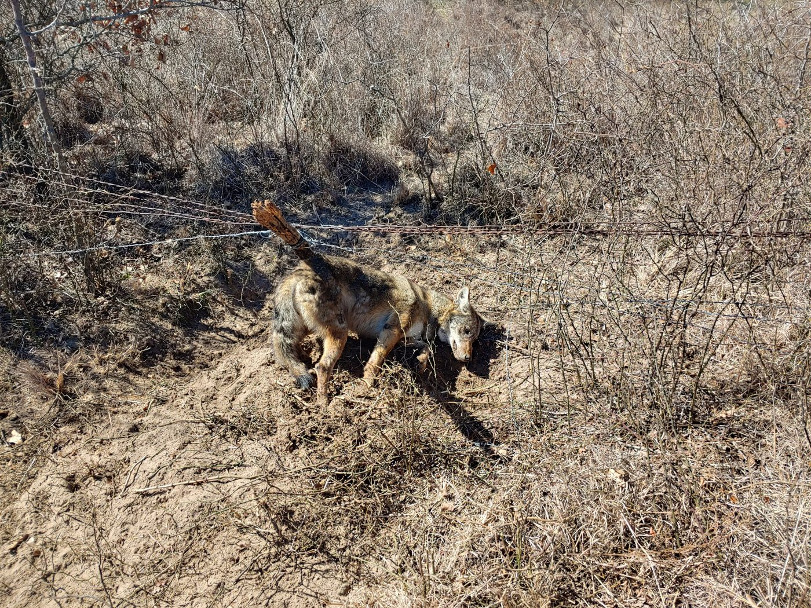
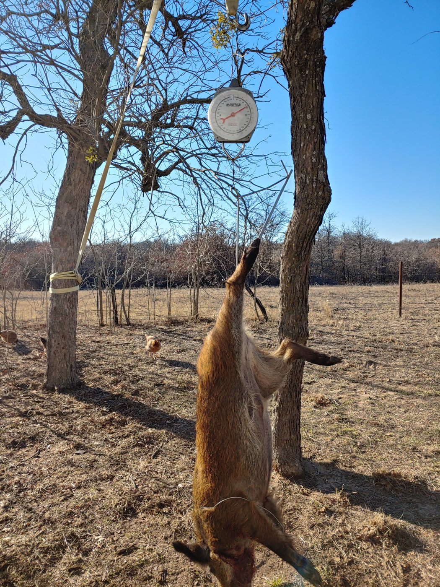

When the stored food runs low, traps work while you sleep.
Survival trapping and snaring is procuring small game such as rabbits and squirrels with passive devices that keep working while you tend other tasks, making it far more calorie-efficient than active hunting. It covers reading trails and sign, building wire snares and deadfalls, setting commercial Conibear traps and cable snares, and running many sets at once to raise the odds. GridDownData stores this guide on an air-gapped USB drive so the skills are available off-grid or whenever stored food runs short. Always follow local trapping laws where they apply.
Hunting burns calories and daylight; traps work around the clock while you handle everything else. GridDownData carries an offline guide to putting protein on the table with snares and traps: reading animal runs and sign, building wire snares and figure-four deadfalls, placing Conibear body-grip traps and cable snares, and running a productive trapline of a dozen or more sets. It also covers legal cautions, ethical quick-kill practice, and safe game handling, all on an air-gapped USB drive.
Field noteI have run these methods for real. I snared a wild hog on my place in Texas with a premade wire snare set on a game trail where it slipped under a barbed-wire cross fence, about forty yards off a tree line. Even with a .22 Magnum pistol on hand, that young sow took several shots to put down, a reminder that hogs are tough and the snare is only the first half of the job. And the eating? She was delicious. My wife swore the meat tasted like roast beef, and acorn-fed sows and smaller boars in the forty-to-eighty-pound range are hard to beat on the table. For raccoons and skunks I have had steady luck with dog-proof traps baited with mackerel or cheap sardines. Check your local trapping laws first, and on the skunk sets, plan your approach carefully, because you only forget that lesson once. (a wire snare on Amazon, dog-proof traps on Amazon — As an Amazon Associate I earn from qualifying purchases.)


Frequently asked questions
Why is trapping better than hunting for survival food?
Trapping is passive: once your sets are placed you are no longer burning calories or daylight standing watch, so many traps can work for you at the same time across a wide area. Because success is a numbers game, a dozen or more sets on active trails dramatically raises your odds of catching food compared with the energy and patience active hunting demands.
What animals can I realistically catch with snares?
Small game such as rabbits, squirrels, and other rodents are the most abundant and reachable targets, and the same principles extend to raccoon, beaver, and similar mid-sized animals with the right trap. The guide concentrates on plentiful small game because it is far easier to secure in numbers than large mammals, which matters most when you need steady, reliable protein day after day.
How do I know where to set a trap?
You set on a run, an active animal trail showing tracks, droppings, chewed vegetation, or matted paths, because animals follow predictable routes. Natural funnels, gaps under fences, and the edges of cover concentrate movement into a narrow spot ideal for a snare. The guide teaches reading this sign and positioning sets so the animal walks into the trap naturally rather than around it.
How often should I check my traps?
Check every set at least twice a day, typically early morning and again before dark, so caught game stays fresh and does not draw predators like hawks or coyotes that will steal it. Frequent checks are also the humane and responsible practice, letting you dispatch or release an animal quickly. The guide covers safe handling, resetting a sprung trap, and field-dressing your catch cleanly.
Fresh game is only worth catching if you can keep it — see Grid-Down Food Storage for preserving meat and staples without refrigeration.
Get Your Vault